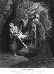
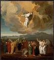

No Princípio Era o Verbo

Um Grande Impacto?
Todo mês de dezembro, começamos a antecipar a maior celebração do ano: o Natal! Todas as lojas e muitas casas estão iluminadas com luzes e enfeites, e até mesmo as ruas de muitas cidades brilham com luzes cintilantes em torno de muitos dos edifícios. E a maior emoção de todas? Presentes! O que vamos receber? Será que temos sido esperando? Nós simplesmente não podemos esperar para 25 de dezembro!

Uma Entrada Muito Tranquila
É assim que aconteceu há 2000 anos atrás? Eram pessoas esperando ansiosamente: decoraram eles suas casas na expectativa do nascimento de Jesus? Compraram eles os presentes um para o outro para comemorar este nascimento tão esperado? Quando Ele nasceu, fez um anúncio para ir por todo o mundo que o Salvador tinha chegado à última?
De modo nenhum.

Quando Jesus nasceu em Belém, também chamada de Cidade de Davi (lembre-se?), apenas um punhado de pessoas estavam realmente cientes de que. Não foi Maria, a mãe de Jesus, e José, seu noivo. Os donos da pousada onde Maria e José foram provavelmente estavam conscientes de que a mulher tinha dado à luz, mas não tinha importância especial para eles.
Mas houve grande alegria no céu, nós sabemos, porque Lucas 2:8-14 diz-nos que um grande grupo de anjos apareceu para alguns pastores na noite do nascimento de Jesus. Eles não só anunciaram que um menino chamado Jesus nasceu, mas na verdade proclamou que Ele era o Messias que os judeus estavam esperando por tanto tempo!
Mas seria mais trinta anos antes do resto o mundo descobrir que.
Quatro Homens, Quatro Histórias

Nos anos seguintes a morte, ressurreição e ascensão de Jesus, quatro homens foram inspirados para escrever sobre a vida Dele. Os quatro primeiros livros do Novo Testamento são nomeados para os homens que escreveram essas biografias (geralmente são chamados evangelhos): Mateus, Marcos, Lucas e João.
Provavelmente, eles não conheço ninguém estava escrevendo a história de Jesus. Mateus, Lucas e João, quase certamente tinha lido o Evangelho de Marcos; estudiosos acreditam que foi a primeira biografia de Jesus para ser escrito. Mas os quatro evangelhos foram escritos de forma independente umas das outras.

Quando as pessoas contam uma história sobre um evento, geralmente tentam incluir os seus opiniões, que são as partes mais importantes. Este foi o caso com Mateus, Marcos, Lucas e João; alguns incluem os eventos e as histórias que os outros não incluem.
Por exemplo, apenas Mateus e Lucas contam a história do nascimento de Jesus. Talvez na mente de Lucas, que achou importante que as pessoas sabiam que Jesus nasceu de uma virgem. José, o noivo de Maria, não era o pai de Jesus; Jesus era o Filho de Deus. (Lucas 1:26-38)
O Evangelho de Mateus começa com a linhagem de Jesus. Lembre-se como naquela época distante, Deus prometeu a Abraão que o mundo seria abençoado por um rei que viria a partir de seus descendentes (Gênesis 12:3)? Mateus tem o cuidado de mostrar que Jesus era um descendente direto do Rei Davi, que era um descendente direto de Abraão. Jesus foi o cumprimento dessa profecia antiga.
No caso de Marcos e João, eles parecem assumir que, quando eles estavam escrevendo sobre Jesus, todos sabiam de quem eles estavam falando: Em Sua época, Jesus era muito, muito famoso. Assim, Marcos e João começam suas histórias de Jesus, quando Ele começou Seu ministério terrestre, ou seja, quando Ele tinha cerca de trinta anos.
Um Messias Inesperado

Quando nós aprendemos dos profetas, que previu que Israel iria cair para a Assíria e da Babilônia, nós também aprendemos que mesmo esses profetas previram que um rei viriam da linha do Rei Davi. Estas profecias deram os judeus esperança que Israel voltaria a se tornar uma grande nação, que um rei iria conquistar todos os inimigos de Israel e transformá-lo em uma superpotência que dominaria o mundo.
Mas os judeus não leram todas as profecias; ou se foram lidos, foi muito mal entendido e que muitos das profecias significavam. Os profetas DUAS deram descrições do Messias que Deus enviaria. Um deles seria realmente um poderoso governante. O que os judeus não entendem era que o rei viria de uma forma mais humilde (Belém, lembre-se?), Ele não viria com muita fanfarra (Lembre-se da noite calma em obscura, pequeno Belém?), e seria um homem que conheceria a dor e o sofrimento, não a glória e o poder real.
Como derrotado, as pessoas desmoralizadas, os judeus não estavam à procura de um Messias que seria uma pessoa humilde gosto de Jesus; eles estavam procurando alguém muito mais espetacular do que isso.
E assim, quando Jesus veio e viveu entre eles, eles não reconheceram o Messias quando eles viram ele.
Os Ensinamentos de Jesus
Lembre-se que Jesus foi crescido em um lugar que estava sob o domínio de outro país: onde Ele morava, era o poderoso Império Romano. Jesus cresceu em uma sociedade que foi muito simples; o povo judeu era muito devota, e os seus vizinhos agricultores ou pescadores ou comerciantes (JJosé, o marido de sua mãe, era um carpinteiro).
Talvez por isso, Jesus tentou ensinar verdades espirituais, contando histórias, chamado de parábolas, muitas vezes sobre coisas que as pessoas em Sua companhia tinha que saber e entender:

- um agricultor plantando de no seu campo (Mateus 13:2-23)
- um filho que se rebela contra seus pais, mas retorna a eles com grande remorso por seu pecados (Lucas 15:11-32)
- um pastor que perdeu uma de suas ovelhas (Mateus 18: 10-14)
Os Fariseus
No época que Jesus viveu, os sacerdotes (a Bíblia também chama eles de “fariseus”, uma palavra que significa “separado”), governaram a vida quotidiana dos judeus. Os sacerdotes vinham de uma das doze tribos de Israel que Deus tinha escolhido especificamente para o papel: os Levitas (da tribo de Levi). Eles sentiram que era o seu trabalho para os judeus, para evitar cair em pecado, como eles fizeram no passado. Foi o seu trabalho, ou assim pensavam eles, para ler e interpretar a Bíblia para o povo. (Lembre-se do que dissemos antes sobre a intenção de Deus que a Bíblia é para todos?)
Jesus não tinha ido para a escola rabínica, e assim os fariseus não consideravam Ele como “qualificado” para ser um professor.

Para ser um rabino ou um professor, um homem teve que passar por um longo período de treinamento em uma escola especial rabbinical.
Jesus não tinha ido para a escola rabínica, e assim os fariseus não consideravam Ele como “qualificado” para ser um professor.
Assim, quase desde o início do seu ministério, Jesus estava em desacordo com os líderes religiosos. Multidões de pessoas se reuniram para ouvir Jesus ensinar. Em uma de Suas séries mais famosas de aulas, o chamado Sermão da Montanha (que pode ser encontrada em Mateus 5 e Lucas 6), praticamente todos os pontos que Ele fez foi contra que os fariseus tinham ensinado as pessoas.

Algumas das ideias principais que Jesus queria que seus seguidores aprendessem:
- Deus ama as pessoas e quer que as pessoas amam a Ele. Uma forma de mostrar nosso amor a Deus é obedecer não apenas à letra da lei, mas também o espírito.
- Jesus quer que Seus seguidores a sejam conhecidos por Seu amor: amor para seus irmãos na fé, e amor até mesmo para seus inimigos. Deus ofereceu-se para nos perdoar os pecados; Ele quer que nós perdoamos uns aos outros.
A Coisa Mais Importante
A coisa mais importante que Jesus queria que Seus seguidores soubessem era que Ele, Jesus, foi o Filho de Deus, e que a salvação do pecado vem somente através Dele. Um dos versos mais famosos da Bíblia é João 3:16:
Porque Deus amou o mundo de tal maneira que deu o Seu Filho unigênito, para que todo aquele que nele crê não pereça, mas tenha a vida eterna.
Esta afirmação de Jesus foi revolucionária por duas razões: Em primeiro lugar, a idéia de que Jesus era o Filho de Deus era inaceitável para muitos judeus. Como poderia um mero homem ser Deus? A segunda ideia que os líderes religiosos nos dias de Jesus não podiam aceitar era que a salvação não era reservada somente para os judeus. Jesus disse que quem acredita nele pode pertencer ao Reino de Deus. (João 1:12)
Os Saduceus
Outro grupo de judeus que viviam no tempo de Jesus eram chamados os saduceus. Estes foram importantes, muitas vezes, os homens ricos que tinham feito uma espécie de acordo político com os romanos, por isso tiveram uma certa quantidade de poder político. Os saduceus por vezes, assumiu a tarefa de aumentar os impostos para os romanos dos seus companheiros judeus, e muitas vezes desonesta, exigindo mais do que as pessoas lhes devia, para que pudessem manter uma quota para si próprios.
Eles eram considerados traidores por muitos dos judeus por causa das suas ligações estreitas com os romanos odiados. Rebelião estava nas mentes de muitos judeus na época de Jesus; eles se irritaram com a dureza do domínio romano.
Os saduceus acreditavam que era o trabalho deles para manter a paz entre os judeus e os romanos. Na mente dos saduceus, se os judeus não eram um problema para os romanos, era mais fácil para todos.

O Problema Com Jesus
Como vimos anteriormente, Jesus estava ensinando as multidões de pessoas a boa notícia a respeito de Deus e do Seu amor. Os fariseus não gostavam disso; eles queriam ser a única autoridade religiosa entre os judeus. Jesus ensinava as pessoas a pensar mais profundamente sobre as questões espirituais do que os padres tinham feito, e o povo o amava por isso.

Os saduceus não gostavam da multidão que Jesus tirou-os a si mesmo. Uma multidão de pessoas não podiam ser facilmente controlado. Se Jesus queria que o multidão em torno de si segui-lo em rebelião contra Roma, que poderiam fazer sobre isso?
Os saduceus sabiam que nem uma grande multidão de judeus não era páreo para o poder do exército romano. Se os romanos tinham que acabar com uma rebelião judaica, eles iriam esmagá-los completamente (e cerca de 35 anos após a vida de Jesus, foi exatamente o que eles fizeram). Seu poder político não significaria nada para os romanos, e os saduceus não estavam dispostos a perder seus poderes a um joão-ninguém como Jesus!

A pior coisa que Jesus fez, porém, foi para anunciar ao povo que Ele era realmente o Filho de Deus. Ele disse-lhes que Ele era o Messias que estavam esperando por tanto tempo. Para os fariseus, isto era uma blasfêmia (falta de respeito completa para Deus)! Sob a lei judaica, era um crime punível com a morte!
Novamente e novamente, Jesus fez sinais e milagres para sustentar Sua reivindicação de ser o Messias: Ele curou os enfermos, fez os cegos vêem e os coxos andar novamente. E também um homem tinha sido ressuscitado dos mortos!
Jesus foi percebido como uma ameaça aos fariseus (porque Ele estava levando as pessoas a duvidar a autoridade deles) e os saduceus (porque poderia ser uma ameaça ao poder deles).
Os fariseus e os saduceus não eram bons amigos e normalmente não colaboraram uns com os outros, mas agora havia um inimigo comum: Jesus.

Uma noite, quando Jesus estava orando, Judas Iscariotes, um homem que tinha estado no grupo de amigos mais próximos de Jesus, levou um grupo de fariseus e saduceus a um lugar onde ele sabia que Jesus gostava de rezar, o Jardim do Getsêmani. Jesus não resistiu à prisão, mas Ele sabia que tinha cometido nenhum crime.
Os acusadores de Jesus levou-o à casa de Caifás, o sumo sacerdote do templo, para realizar um julgamento secreto. Caifás disse que Jesus era culpado de blasfêmia por causa de Sua reivindicação de ser o Messias, o Filho de Deus.

Como Ele estava diante do sumo sacerdote, Jesus disse, “Eu sou o Messias, e você vai ver-me na mão direita de Deus." (Marcos 14:62)
Apesar das testemunhas falsas que se reuniram para dar "testemunho" contra Jesus, Caifás decidiu que esta declaração de Jesus foi uma confissão de culpa. Seu veredicto foi que Jesus deveria ser condenado à morte.
Os judeus não poderiam realizar a pena de morte sem a autorização do governador romano, Pilatos. Os sacerdotes levaram Jesus a Pilatos e disse que Jesus tinha cometido traição: se Ele afirmava ser o Messias, eles disseram, que era o mesmo que dizer que Ele era o Rei dos Judeus. Sob a lei romana, ninguém poderia ser chamado rei, senão César.
Pilato não realmente acreditou que Jesus era sério em dizendo que ele era o Rei, porque Ele não oferecer uma defensa enquanto ele estava sendo julgado. Mas os sacerdotes judeus insistiram para que ele seja condenado à morte. Mesmo quando Pilatos ofereceu-lhes uma escolha de ter um assassino condenado, Barrabás, liberta, ou ter libertado Jesus, o povo todo gritou que Jesus deve ser condenado à morte. (Marcos 15:6-13)
Jesus Morre É Ressuscitado

A crucificação era uma forma de punição capital utilizado pelos romanos. Foi uma forma vergonhosa de morrer. Embora Jesus é comumente retratado em pinturas vestindo uma tanga, era realmente despojado de Sua roupas, então estava nua para todos verem. Foi especialmente constrangedor porque a crucificação era reservado pelos romanos para os piores tipos de criminosos.
Depois de uma noite de ser espancado, primeiro por seus acusadores, os judeus, e depois guardas romanos, Jesus foi forçado a carregar Sua cruz até o lugar onde era para ser crucificado. Ele estava tão fraco de todos os golpes que Ele não podia suportar o peso da cruz; um escravo que estava passando ao longo do caminho foi feito para carregar a cruz de Jesus para Ele.
Quando chegaram ao lugar da crucifixão, guardas romanos pregaram as mãos e os pés de Jesus na cruz. Os soldados que o levaram lá apostaram para a roupa que eles tinha tirado Dele.
Embora geralmente tomou vários dias de intenso sofrimento para morrer na cruz, as feridas de Jesus e Sua perda de sangue na noite anterior, provavelmente acelerou a Sua morte. Ele morreu no mesmo dia em que foi pregado na cruz.
Embora a maioria dos amigos de Jesus o havia deixado quando foi preso no Jardim do Getsêmani, um homem chamado José de Arimatéia teve a coragem de ir até Pilatos e pedir o corpo de Jesus para que ele pudesse ser enterrado corretamente.
Ele enrolou o corpo de Jesus de linho e depositou ele em um túmulo que tinha sido escavado na rocha. Ele rolou uma grande pedra sobre a entrada e para a esquerda.
Jesus já havia tentado a dizer aos Seus discípulos muitas vezes que Ele iria morrer como o último sacrifício pelos pecados da humanidade, mas eles nunca tinha entendido.
Se Jesus era o Filho de Deus, eles argumentaram, se Ele era o Messias prometido de Deus, como Ele poderia morrer?
No terceiro dia após a morte de Jesus, algumas das mulheres que foram Seus amigos foram ao túmulo onde foi enterrado. Era o costume judaico ungir um corpo com algumas especiarias para o sepultamento. Quando saíram, eles perguntaram uns aos outros é que elas iam mover a pedra que foi rolada em frente à tumba.

Quando as mulheres chegaram, ficaram surpresos ao descobrir que a pedra tinha sido removida e que o túmulo estava vazio!
Um anjo, que estava sentado no chão onde o corpo de Jesus lhes havia, dito, “Não tenha medo! Jesus ressuscitou dentre os mortos, como ele disse que iria!” O anjo disse às mulheres para retornar aos seus amigos e dizer-lhes a grande notícia de que Jesus tinha ressuscitado dos mortos. (Marcos 16:6-7)
Assim como os judeus celebram a Páscoa cada ano para comemorar sua libertação da escravidão no Egito, os cristãos celebram o Domingo de Páscoa como o evento mais glorioso na história: Jesus tinha ressuscitado dos mortos, vencendo o poder da morte sobre a humanidade e para oferecer o perdão dos nossos pecados de todos os tempos!
Naturalmente, os amigos de Jesus não podiam acreditar quando soube que Jesus não estava em seu túmulo.
Mas Jesus apareceu aos onze discípulos várias vezes após sua ressurreição. Ele passou muito tempo conversando com ele sobre como tinha sido o cumprimento de muitas profecias, e seus olhos foram finalmente abertos a todas as verdades que Jesus tinha tentado a dizer-lhes antes de sua crucificação. (Lucas 24:27)
Jesus Ascende Ao Céu
Jesus continuou a aparecer aos discípulos, durante um período de quarenta dias depois da ressurreição. Certa vez, durante um jantar que compartilhou com eles, Ele pediu que Seus apóstolos não se afastassem de Jerusalém até que eles tinham recebido o dom do Espírito Santo. (João 14:16)
Na última ocasião, quando Jesus apareceu aos discípulos, eles perguntaram se agora era para restaurar Israel à sua antiga glória. Jesus respondeu que só Deus sabe a resposta a essas questões. (Atos dos Apóstolos 1:7)
E, como eles todos ali estavam com Ele, Jesus começou a subir no céu, para cima e longe deles. Os discípulos olhavam e olhavam até que eles não podiam ver Jesus mais. Jesus havia subido ao céu para estar com seu pai, mas a história não termina aí. Na verdade, foi só o começo